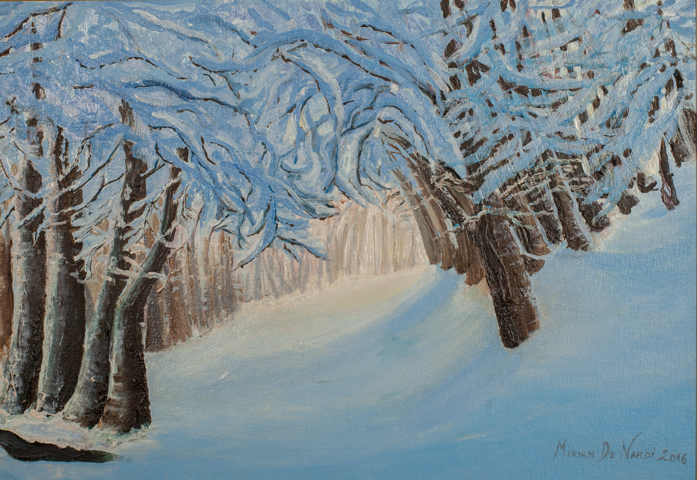

Sentiero innevato

Sentiero innevato
Olio su Cartone telato CM 40x50
Lasciarsi trasportare ad ascoltare il silenzio della neve, il lieve tonfo di caduta dai rami al suolo, il suo odore fresco e pulito, il freddo e caldo tra le mani e sul viso, lo scricchiolio dei passi sulla neve fresca . Percepire l’anima degli alberi ed il loro calore, catturare con lo sguardo la luce solare che filtra tra i rami… e tutto intorno a te è vita è rumore è silenzio.
Il “Sentiero nella neve” mi ha stimolato a trasmettere sensazioni dei sensi dalla tela all’osservatore, ho cercato di raccogliere emozioni vissute e riportate nel dipinto.
Periodo di esecuzione 1 Dicembre 2015 – 19 Gennaio 2016 (5 lezioni) *Questo quadro l’ho iniziato e terminato al corso in 5 lezioni.